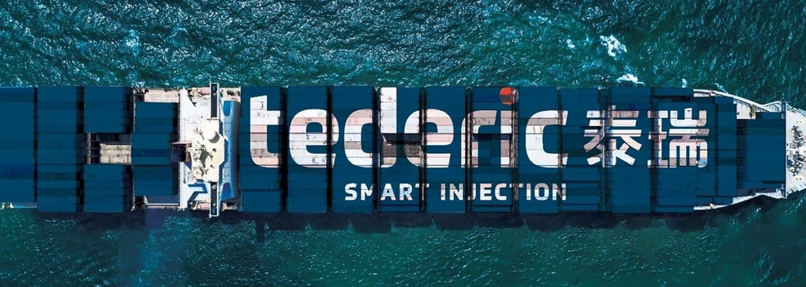

<!DOCTYPE html><html lang="en"></html><head><meta charset="UTF-8"><meta name="viewport" content="width=device-width, initial-scale=1.0"><title>Tederic – інноваційні рішення для лиття пластмас під тиском</title><link rel="stylesheet" href="css/styles.css"><link rel="preconnect" href="https://fonts.googleapis.com">
<link rel="preconnect" href="https://fonts.gstatic.com" crossorigin>
<link href="https://fonts.googleapis.com/css2?family=Ubuntu+Sans:ital,wght@0,100..800;1,100..800&display=swap" rel="stylesheet"></head><body> <header class="fixed_header dark_mode"><div class="wrapper_header flex-between header items-center"><div class="logo"> <a href="index.html"></a></div><nav class="navigation"> <ul class="navigation_menu"><li><a href="#">Головна</a></li><li><a href="#">Рішення під ключ</a></li><li><a href="#">Термопластавтомати</a></li><li><a href="#">Новини</a></li><li><a href="#">Контакти</a></li></ul></nav><div class="button"> <a class="cta connect_cta transparent_cta" href="#">Звʼязатися з нами</a></div></div></header><main> <section class="main_section"><div class="dark_mask"><div class="mask"> </div><picture> </picture></div><div class="main_text flex column items-center flex-center tac wrapper"><h1 class="animate fade-up" data-delay="600">Tederic – інноваційні рішення для лиття пластмас під тиском</h1><p class="animate fade-up" data-delay="800">Ми пропонуємо комплексні рішення для лиття пластмас: від консультацій та підбору обладнання до введення у експлуатацію та сервісного обслуговування.</p><div class="button_container flex flex-center wrap_768 gap_20 animate fade-up" data-delay="1000"><a class="cta connect_cta fill_cta" href="#">Звʼязатися з нами</a><a class="cta transparent_cta" href="#">Продукція </a></div></div></section><section class="wrapper about_container"><div class="about_gesplast pt_100"><h2 class="animate fade-up" data-delay="100">Про компанію «Геспласт Груп»</h2><h3 class="animate fade-up" data-delay="200">Ми – офіційний представник компанії Tederic на ринку України.</h3><p class="animate fade-up" data-delay="300">«Геспласт Груп» – це суб-компанія ПВКФ «Бджілка», лідера українського ринку у виробництві прес-форм та постачанні виробничих комплексів для лиття пластику «під ключ».</p><p class="animate fade-up" data-delay="400">Метою створення компанії стало розширення можливостей групи та фокус на постачанні сучасного обладнання для переробки пластмас. Основний акцент діяльності «Геспласт Груп» – офіційне представництво та просування термопластавтоматів Tederic , які відомі своєю надійністю, ефективністю та інноваційними технологіями.</p><p class="animate fade-up" data-delay="500">Ми допомагаємо українським виробникам отримати доступ до передових рішень для лиття пластмас під тиском, забезпечуючи повний супровід – від консультацій та підбору обладнання до введення у експлуатацію та сервісного обслуговування.</p><div class="img_about animate fade-up" data-delay="600"><picture> <source srcset="img/gesplast.webp" type="image/webp"></picture></div></div><div class="about_tederic pt_100"><h2 class="animate fade-up" data-delay="100">Про Tederic Machinery</h2><h3 class="animate fade-up" data-delay="200">Tederic Machinery – провідний світовий виробник термопластавтоматів та постачальник комплексних рішень для лиття під тиском. Компанія впроваджує передові технології та пропонує сучасні рішення для всієї галузі лиття пластмас і металу</h3><p class="animate fade-up" data-delay="300">Tederic – єдиний виробник, представлений на головній біржі Шанхаю.</p><p class="animate fade-up" data-delay="400">Багатий досвід та експертні знання дозволяють компанії впевнено розвиватися та задовольняти потреби замовників у різних країнах світу. Простійні інновації та прагнення до досконалості роблять термопластавтомати Tederic еталоном надійності та якості.</p><div class="img_about animate fade-up" data-delay="500"><picture> <source srcset="img/tederic.webp" type="image/webp"></picture></div></div><div class="asortment_list flex-between gap_20 pt_60 items-center"><div class="animate fade-left" data-delay="100"><h3>Компанія виготовляє широкий асортимент термопластавтоматів:</h3><ul><li>Електричні;</li><li>Коліно-важільні;</li><li>Двоплитні;</li><li>Багатокомпонентні.</li></ul><p class="flex items-center gap_20">Зусилля змикання <span class="price">від 60 до 7000 тон</span></p></div><div class="animate fade-right" data-delay="100"><picture> <source srcset="img/list.webp" type="image/webp"></picture></div></div><div class="need_block flex-between gap_20 pt_60 itemc-center"><div class="animate fade-left" data-delay="300"><picture> <source srcset="img/need.webp" type="image/webp"></picture></div><div class="animate fade-right" data-delay="300"><h3>Ваші потреби – наші рішення у сфері термопластавтоматів</h3><p>Завдяки власним технологіям, повному виробничому циклу та контролю якості, Tederic забезпечує стабільність, ефективність і надійність обладнання при помірній вартості.</p></div></div></section><section class="statistic_container dark_mode"><div class="wrapper flex-between stats gap_20 wrap"><div class="animate fade-up" data-delay="100"><p class="border_bottom"> <span class="counter" data-target="140"></span><span class="simbol_text">+</span> країн</p><p>географія продажу продукції Tederic</p></div><div class="animate fade-up" data-delay="300"> <p class="border_bottom"> <span class="simbol_text">></span><span class="counter" data-target="10"></span> технологій</p><p>географія продажу продукції Tederic</p></div><div class="animate fade-up" data-delay="500"><p class="border_bottom"> <span class="counter" data-target="102"> </span> патента</p><p>географія продажу продукції Tederic</p></div><div class="animate fade-up" data-delay="700"><p class="border_bottom"> <span class="counter" data-target="335000"></span>м<sup>2</sup></p><p>географія продажу продукції Tederic</p></div></div></section></main><script src="js/scripts.js"></script></body>